건설안전산업기사 (2009-08-30 기출문제)
1과목: 산업안전관리론
1. 다음 중 가죽제 안전화 완성품에 대한 시험성능기준 항목에 해당되지 않는 것은?
- 내압박성
- 내충격성
- 내전압성
- 박리저항
(정답률: 31%)

2. B기업체에서 1000명의 작업자가 1주에 40시간, 연간 50주를 작업하는데 80건의 재해가 발생하였다. 이 가운데 작업자들이 질병 등 기타 이유로 인하여 총 근로시간의 5%를 결근하였다면 이 기업체의 도수율은 약 얼마인가?
- 35.⑤
- 42.11
- 57.21
- 68.35
(정답률: 65%)
3. 다음 내용과 같은 재해유발원인을 가지는 재해 누발자는?
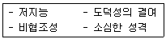
- 상황성 누발자
- 습관성 누발자
- 소질성 누발자
- 결합성 누발자
(정답률: 58%)
4. 다음 중 토의식 교육지도에 있어서 가장 시간이 많이 소요되는 단계는?
- 도입
- 제시
- 적용
- 확인
(정답률: 54%)
5. 다음 중 주의의 특징에 해당되지 않는 것은?
- 선택성
- 자유성
- 방향성
- 변동성
(정답률: 59%)
6. 매슬로우(A.H Maslow)의 인간욕구 5단계 이론에서 각 단계별 내용이 잘못 연결된 것은?
- 1단계 : 자아실현의 욕구
- 2단계 : 안전에 대한 욕구
- 3단계 : 사회적 욕구
- 4단계 : 존경에 대한 욕구
(정답률: 77%)
7. A 건설현장에서 굴삭기로 작업을 하던 중 가스관에서 누출된 가스에 의하여 폭발사고가 발생하였다면 이때의 가해물과 기인물을 올바르게 연결한 것은?
- 가해물 : 굴삭기 기인물 : 가스
- 가해물 : 가스 기인물 : 가스관
- 가해물 : 가스관 기인물 : 가스
- 가해물 : 굴삭기 기인물 : 가스관
(정답률: 47%)
8. 다음 중 교육의 3요소가 아닌 것은?
- 교육의 주체
- 교육의 기관
- 교육의 매개체
- 교육의 객체
(정답률: 85%)
9. 사고의 직접적인 원인 중의 하나인 불안전한 행동으로 볼 수 없는 것은?
- 부적절한 자세
- 전문지식의 결여
- 신체적 부적합성
- 결함있는 장비
(정답률: 65%)
10. 다음 중 집단을 대상으로 한 안전교육에 있어 가장 효율적인 교육방법은?
- 계몽선전 일반 안전교육
- 교재에 의한 자율교육
- 강의에 의한 교육
- 토의에 의한 교육
(정답률: 32%)
11. 사망재해가 2건 발생하였을 경우 하인리히(Heinrich)의 재해구성비율을 따를 경우 무상해사고는 몇 건 정도가 발생 하였겠는가?
- 20
- 58
- 600
- 660
(정답률: 64%)
12. 재해예방의 4원칙 중 “대책선정의 원칙”에 대한 설명으로 옳은 것은?
- 재해의 발생은 반드시 그 원인이 존재한다.
- 손실은 우연히 일어나므로 반드시 예방이 가능하다.
- 재해는 원칙적으로 원인만 제거되면 예방이 가능하다.
- 재해예방을 위한 가능한 안전대책은 반드시 존재한다.
(정답률: 64%)
13. 다음 적응기제 중 자기의 난처한 입장이나 실패의 결점을 이유나 변명으로 일관하는 것, 또는 실제의 행위나 상태 보다 훌륭하게 평가되기 위하여 구실을 내세우는 행위를 무엇이라 하는가?
- 투사
- 도피
- 합리화
- 동일화
(정답률: 79%)
14. 효율적인 안전관리를 위해서는 4가지의 기본 관리 cycle을 갖춰 반복적으로 활동을 함으로서 안전관리의 수준을 향상시킬 수 있다. 다음 중 관리 cycle의 요소가 아닌 것은?
- Plan
- Control
- Do
- Act
(정답률: 60%)
15. 다음 중 AB종 안전모의 시험성능기준항목으로 볼 수 없는 것은?
- 내전압성
- 내관통성
- 턱끈풀림
- 난연성
(정답률: 55%)
16. 심리검사의 특징 중 '검사의 관리를 위한 조건과 절차의 일관성과 통일성'을 의미하는 것은?
- 표준화
- 객관성
- 규준
- 신뢰성
(정답률: 58%)
17. 전문가 4~5명이 피교육자 앞에서 자유로이 토의를 하고, 그 후에 피교육자 전원이 사회자의 사회에 따라 토의하는 방법을 무엇이라 하는가?
- 패널 디스커션(Panel discussion)
- 심포지엄(symposium)
- 버즈세션(buzz session)
- 롤 플레잉(role playing)
(정답률: 50%)
18. A 사업장에서 각 부서별로 안전경쟁제도를 실시할 때 위험도를 비교하여 안전관심을 높이는데 효과적인 것은?
- 강도율(SR)
- 도수율(FR)
- 세이프 티 스코어(SAFE-T-SCORE)
- 종합재해지수(FSI)
(정답률: 46%)
19. 지난 한 해 동안 산업재해로 인하여 발생한 직접손실 비용이 3조 1600억원이었다면 전체 재해 코스트는 얼마 정도인가? (단, 하인리히의 재해손실비용 평가방식을 적용한다.)
- 6조 3200억원
- 9조 4800억원
- 12조 6400억원
- 15조 8000억원
(정답률: 57%)
20. 의식수준을 5단계로 구분할 때 '의식수준의 저하' 가 발생하는 단계는?
- phase I
- phase II
- phase III
- phase IV
(정답률: 52%)
2과목: 인간공학 및 시스템안전공학
21. 다음 중 정보의 전달방법으로 시각적 표시장치보다 청각적 표시방법을 이용하는 것이 적절한 경우는?
- 수신자가 여러 곳으로 움직여야 할 때
- 정보의 내용이 복잡하고 길 때
- 정보가 공간적인 위치를 다룰 때
- 즉각적인 행동을 요구하지 않을 때
(정답률: 53%)
22. 작업자가 직무를 수행하는 과정에서 해야 할 것을 하지 않은 즉 직무를 생략하여 발생한 형태의 휴먼에러는?
- time error
- sequential error
- commission error
- omission error
(정답률: 40%)
23. FT도에 의한 컷셋(cut sets)이 다음과 같이 구해졌을 때 최소 컷셋(minimal cut set)으로 옳은 것은?
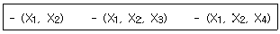
- (X1, X2)
- (X1, X2, X3)
- (X1, X2, X4)
- (X1, X2, X3, X4)
(정답률: 58%)
24. 옥외의 자연조명에서 최적명시거리일 때 문자나 숫자의 높이에 대한 획폭비는 일반적으로 검은 바탕에 흰 숫자를 쓸 때는 (A), 흰 바탕에 검은 숫자를 쓸 때는 (B)가 독해성이 최적이 된다고 한다. 다음 중 (A), (B)의 획폭비로 가장 적절한 것은?
- (A) 1 : 5.3 (B) 1 : 10
- (A) 1 : 3.1 (B) 1 : 12
- (A) 1 : 11.1 (B) 1 : 4
- (A) 1 : 13.3 (B) 1 : 8
(정답률: 44%)
25. 다음 중 위험과 운전성연구(HAZOP)에 대한 설명으로 틀린 것은?
- 전기설비의 위험성을 주로 평가하는 방법이다.
- 처음에는 과거의 경험이 부족한 새로운 기술을 적용한 공정설비에 대하여 실시할 목적으로 개발되었다.
- 설비전체보다 단위별 또는 부문별로 나누어 검토하고 위험요소가 예상되는 부문에 상세하게 실시한다.
- 장치 자체는 설계 및 제작사양에 맞게 제작된 것으로 간주하는 것이 전제 조건이다.
(정답률: 37%)
26. 다음 중 인간-기계 시스템에서의 신뢰도 유지 방안으로 볼 수 없는 것은?
- fail-safe system
- control system
- fool-proof system
- lock system
(정답률: 41%)
27. VDT(Visual Display Terminal) 작업을 위한 조명의 일반원칙으로 적절하지 않은 것은?
- 조명의 수준이 높으면 자주 주위를 둘러봄으로써 수정체의 근육을 이완시키는 것이 좋다.
- 화면과 화면에서 먼 주위의 휘도비는 10 : 1로 한다.
- 작업영역을 조명기구 바로 아래보다는 각 조명기구들 사이에 둔다.
- 화면반사를 줄이기 위해 산란식 간접조명을 사용하는 등의 방법을 취한다.
(정답률: 27%)
28. 모든 시스템 안전프로그램 중 최초단계의 분석으로 시스템 내의 위험요소가 어떤 상태에 있는지를 정성적으로 평가하는 방법은?
- FHA
- PHA
- CA
- FMEA
(정답률: 48%)
29. 예방보전과 사후보전을 모두 실시할 때 보전성의 척도로 사용되는 것은?
- MTTF
- MTBF
- MTTR
- MDT
(정답률: 23%)
30. 다음 중 조도의 단위로 옳은 것은?
- fL
- diopter
- lux
- lumen
(정답률: 58%)
31. 기본사상 ①과 ②가 OR gate로 연결되어 있는 FT도에서 정상사상(top event)의 발생확률은 얼마인가?(단, 기본사상 ①과 ②의 발생확률은 각각 1×10-3/h, 1.5×10-2 /h 이다.)
- 0.008
- 0.015985
- 0.07555
- 0.15085
(정답률: 55%)
32. 인간공학 연구조사에 사용되는 기준에 있어 '기준척도의 신뢰성'이 의미하는 것은?
- 적절성
- 무오염성
- 타당성
- 반복성
(정답률: 50%)
33. 다음 [그림]과 같이 m개 요소의 병렬작용으로 결합된 시스템의 신뢰도(R)를 구하는 식으로 옳은 것은?
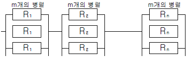
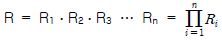
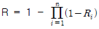
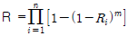
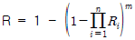
(정답률: 44%)
34. 앉은 작업자가 특정한 수작업 기능을 편히 수행할 수 있는 공간의 외곽한계를 무엇이라고 하는가?
- 파악한계(grasping reach)
- 정상 작업역(normal area)
- 최대 작업역(maximum area)
- 포락면(work-space envelope)
(정답률: 36%)
35. 선형 조정장치를 16cm 옮겼을 때 선형 표시장치가 5cm 움직였다면 통제표시비(C/D비)는 얼마인가?
- 0.2
- 2.5
- 3.2
- 5.3
(정답률: 70%)
36. 다음 인간 에러(human error)를 예방하기 위한 기법과 가장 거리가 먼 것은?
- 작업상황의 개선
- 위급사건기법의 적용
- 요원의 변경
- 시스템의 영향 감소
(정답률: 23%)
37. FT도에 사용되는 기호 중 '시스템의 정상적인 가동상태에서 일어날 것이 기대되는 사상'을 나타내는 것은?(오류 신고가 접수된 문제입니다. 반드시 정답과 해설을 확인하시기 바랍니다.)
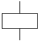
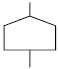
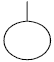
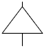
(정답률: 20%)
38. 다음 중 기초대사량에 관한 설명으로 가장 적절한 것은?
- 신체기능만을 유지하는데 필요한 대사량
- 가벼운 운동할 때 필요한 대사량
- 일상적인 생활에 필요한 대사량
- 권장하는 정상작업 중에 소요되는 대사량
(정답률: 41%)
39. 인간공학에 있어 시스템 설계 과정의 주요단계를 다음과 같이 6단계로 구분하였을 때 올바른 순서로 나열한 것은?
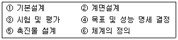
- ① → ② → ⑥ → ④ → ⑤ → ③
- ② → ① → ⑥ → ④ → ⑤ → ③
- ④ → ⑥ → ① → ② → ⑤ → ③
- ⑥ → ① → ② → ④ → ⑤ → ③
(정답률: 72%)
40. 다음 중 정신 활동의 척도와 가장 거리가 먼 것은?
- EEG
- 부정맥
- 점멸융합주파수
- GOMS 척도
(정답률: 19%)
3과목: 건설시공학
41. 전체공사의 진척이 원활하며 공사의 시공 및 책임한계가 명확하여 공사관리가 쉽고 하도급의 선택이 용이한 도급 제도는?
- 공정별분할도급
- 일식도급
- 단가도급
- 공구별분할도급
(정답률: 55%)
42. 경량골재콘크리트 공사에 관한 사항으로 옳지 않은 것은?
- 슬럼프값은 180mm 이하로 한다.
- 경량골재는 배합 전 완전히 건조시켜야 한다.
- 보와 바닥판의 콘크리트는 벽이나 기둥의 콘크리트가 충분히 안정된 후에 부어 넣어야 한다.
- 물-시멘트비의 최대값은 60%로 한다.
(정답률: 62%)
43. 공사에 필요한 특기 시방서에 기재하지 않아도 되는 사항은?
- 인도시 검사 및 인도시기
- 각 부위별 시공방법
- 각 부위별 사용재료
- 사용재료의 품질
(정답률: 68%)
44. 프리팩트파일의 종류 중 파이프회전축의 선단에 커터를 장치하여 흙을 뒤섞으며 지중을 굴착한 다음, 파이프 선단으로 모르타르를 분출시켜 흙과 모르타르를 혼합하여 소일 콘크리트말뚝을 형성하는 것은?
- PIP 말뚝
- MIP 말뚝
- CIP 말뚝
- 슬러리월
(정답률: 29%)
45. 표토붕괴를 방지하기 위하여 스탠드 파이프를 박고 그 이하는 케이싱을 사용하지 않고 회전식 버킷을 이용하여 굴삭하는 공법은?
- 어스드릴공법
- 어스오거공법
- 베노토공법
- 이코스공법
(정답률: 58%)
46. 벽전체용 거푸집으로 거푸집과 벽체 마감공사를 위한 비계틀을 일체로 제작한 거푸집은?
- Flying form
- Climbing form
- Waffle form
- Tunnel form
(정답률: 38%)
47. 서중콘크리트 공사에 대한 설명으로 옳은 것은?
- 서중콘크리트란 일 평균 기온 20℃를 초과하는 시기에 시공되는 콘크리트를 말한다.
- 서중콘크리트는 초기강도 발현이 빠르기 때문에 장기 강도가 높다.
- 부어넣을 때의 콘크리트 온도는 40℃ 이하로 한다.
- 혼화제는 AE감수제 지연형 또는 감수제 지연형을 사용한다.
(정답률: 43%)
48. 철근콘크리트공사에서 구조용 부재 중 기둥에 사용되는 자갈의 최대크기는?
- 15mm
- 20mm
- 25mm
- 40mm
(정답률: 45%)
49. 다음 중 Top down 공법에 대한 설명으로 옳지 않은 것은?
- 지하층과 지상층을 동시작업하므로 공기가 단축된다.
- 완전역타, 부분역타, 보 및 거더식 역타공법 등이 있다.
- 설계변경은 언제나 가능하고, 급배기 환기시설 등이 불필요하다.
- 도심지 공사에서 1층 작업장을 활용하고자 할 때 적용한다.
(정답률: 72%)
50. 철골공사의 접합방법 중 용접에 관한 주의사항으로 옳지 않은 것은?
- 기온이 -5℃ 이하인 경우는 용접해서는 안된다.
- 기온이 -5 ~ 5℃인 경우에는 접합부로부터 100mm 범위의 모재 부분을 적절하게 가열하여 용접할 수 있다.
- 용접에 지장을 주는 슬래그는 제거한다.
- 기둥, 보 접합부에 설치한 엔드탭은 반드시 절단하여야 한다.
(정답률: 46%)
51. 토질시험 중 흙속에 수분이 거의 없고 바삭바삭한 상태의 정도를 알아보기 위한 실험은?
- 함수비시험
- 소성한계시험
- 액성한계시험
- 압밀시험
(정답률: 55%)
52. 토공사용 굴착기계 중 위치한 지면보다 낮은 우물통과 같은 협소한 장소의 흙을 퍼올리는데 가장 적절한 장비는?
- 파워쇼벨
- 지브크레인
- 스크레이퍼
- 클램쉘
(정답률: 76%)
53. 콘크리트 이어치기에 대한 설명으로 옳은 것은?
- 슬래브, 보는 스팬의 중앙 또는 단부의 1/4에서 이어치기를 한다.
- 기둥, 기초는 슬래브의 하단에서 이어친다.
- 원칙적으로 응력이 큰 곳에서 한다.
- 캔틸레버 보는 단부에서 이어치기를 한다.
(정답률: 34%)
54. 그림과 같은 줄기초 파기에서 파낸 흙을 한번에 운반하고자 할 때 4ton 트럭 몇 대가 필요한가? (단, 파낸 흙의 부피증가율은 20%, 파낸 흙의 단위중량은 1.8t/m3)
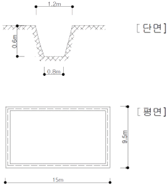
- 14대
- 16대
- 18대
- 20대
(정답률: 57%)
55. 굴착토사와 안정액 및 공수내의 혼합물을 드릴 파이프내부를 통해 강제로 역순환시켜 지상으로 배출하는 공법으로 다음과 같은 특징이 있는 현장타설 콘크리트 말뚝공법은?
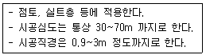
- 어스드릴공법
- 리버스서큘레이션공법
- 뉴메틱케이슨공법
- 심초공법
(정답률: 78%)
56. 경량콘크리트(Lightweight Concrete)에 대한 설명 중 옳지 않은 것은?
- 기건비중은 2.0 이하, 단위중량은 1700kg/m3 정도이다.
- 열전도율은 보통 콘크리트와 유사하나 단열성은 우수하다.
- 물과 접하는 지하실 등의 공사에는 부적합하다.
- 경량이어서 인력에 의한 취급이 용이하고, 가공도 쉽다.
(정답률: 60%)
57. 표준관입시험은 63.5kg의 추를 76cm 높이에서 자유 낙하시켜 샘플러가 일정 깊이까지 관입하는데 소요되는 타격회수(N)로 시험하는데 그 깊이로 옳은 것은?
- 15cm
- 30cm
- 45cm
- 60cm
(정답률: 79%)
58. 용접봉의 용접 방향에 대하여 서로 엇갈리게 움직여서 금속을 용착시키는 운봉방식은?
- 언더컷(under cut)
- 오버랩(over lap)
- 위빙(weaving)
- 크랙(crack)
(정답률: 76%)
59. 철근콘크리트 구조용으로 쓰이는 철근의 종류라고 보기 어려운 것은?
- 용접철망(wire mesh)
- 원형철근(round bar)
- 이형철근(deformed bar)
- 메탈라스(metal lath)
(정답률: 76%)
60. QC의 7대 도구 중 결함부나 기타 시공불량 등 항목을 구분하여 크기순으로 나열한 것으로, 결함항목을 집중적으로 감소시키는데 효과적으로 사용되는 것은?
- 파레토도
- 히스토그램
- 산포도
- 관리도
(정답률: 58%)
4과목: 건설재료학
61. 고온으로 가열하여 소정의 시간동안 유지한 후에 냉수 온수 또는 기름에 담가 냉각하는 처리로 강도 및 경도 내마모성의 증진을 목적으로 실시하는 강의 열처리법은?
- 불림(Normalizing)
- 풀림(Annealing)
- 담금질(Quenching)
- 뜨임(Tempering)
(정답률: 73%)
62. 절대건조비중(r)이 0.75인 목재의 공극률은?
- 약 48.7%
- 약 75.0%
- 약 25.0%
- 약 51.3%
(정답률: 36%)
63. 백시멘트와 종석, 안료를 혼합하여 만든 것으로 천연석과 유사한 외관을 가진 인조석은?
- 라프코트
- 트래버틴
- 캐스트스톤
- 석면
(정답률: 28%)
64. 콘크리트구조물의 크리프현상에 대한 설명 중 옳지 않은 것은?
- 작용응력이 클수록 크리프는 크다.
- 물시멘트비가 클수록 크리프는 크다.
- 외부습도가 높을수록 크리프는 작다.
- 구조부재의 치수가 클수록 크리프는 크다.
(정답률: 46%)
65. 다음 중 알루미늄에 관한 설명으로 옳지 않은 것은?
- 250 ~ 300℃에서 풀림한 것은 콘크리트 등의 알칼리에 침식되지 않는다.
- 비중은 철의 1/3 정도이다.
- 전연성이 좋고 내식성이 우수하다.
- 온도가 상승함에 따라 인장강도가 급히 감소하고 600℃에 거의 0이 된다.
(정답률: 67%)
66. 다음 중 목재 제품의 용도로 옳지 않은 것은?
- 파티클 패널 : 마루판재
- 코르크보드 : 보온재
- 파티클보드 : 칸막이벽
- 코펜하겐 리브 : 바닥장식재
(정답률: 62%)
67. 아마인유의 산화물질 니록신에 수지, 안료 등을 섞어 압연 성형한 제품으로 탄력성이 있어 바닥재로 사용시 부드럽고 보행감이 우수한 재료는?
- 리놀륨
- 비닐타일
- 비닐코팅 시트
- 폴리스티렌수지 타일
(정답률: 56%)
68. 감람석이 변질된 것으로 암녹색 바탕에 흑백색의 무늬가 있고, 경질이나 풍화성으로 인하여 실내장식용으로서 대리석 대용으로 사용되는 암석은?
- 사문암
- 응회암
- 안산암
- 점판암
(정답률: 47%)
69. 보통포틀랜드시멘트 제조시 석고를 넣는 이유로 알맞은 것은?
- 강도를 높이기 위하여
- 균열을 줄이기 위하여
- 응결시간 조절을 위하여
- 수축팽창을 줄이기 위하여
(정답률: 38%)
70. 다음 중 콘크리트의 응결 강화 촉진재로 쓰이는 것은?
- 염화칼슘
- 리그닌설폰산염
- 인산염
- 산화아연
(정답률: 63%)
71. 흑색 또는 회색 등이 있으며 얇은 판으로 뜰 수도 있어 천연슬레이트라 하여 치밀한 방수성이 있어 지붕, 벽 재료로 쓰이는 것은?
- 감람석
- 응회석
- 점판암
- 안산암
(정답률: 56%)
72. 콘크리트의 건조수축시 발생하는 균열을 보완, 개선하기 위하여 콘크리트 속에 다량의 거품을 넣거나 기포를 발생시키기 위해 첨가하는 혼화재는?
- 고로슬래그
- 플라이애쉬
- 팽창제
- 실리카 흄
(정답률: 68%)
73. 플라스틱 재료의 일반적인 성질에 대한 설명으로 옳지 않은 것은?
- 플라스틱의 강도는 목재보다 크며 인장강도가 압축강도보다 매우 크다.
- 플라스틱은 상호간 접착이 잘되며, 금속, 콘크리트, 목재, 유리 등 다른 재료에도 부착이 잘된다.
- 플라스틱은 일반적으로 전기절연성이 양호하다.
- 플라스틱은 열에 의한 팽창 및 수축이 크다.
(정답률: 70%)
74. 황동의 성질에 대한 설명으로 옳지 않은 것은?
- 동과 주석의 합금이다.
- 가공이 용이하고 내식성이 크다.
- 알칼리 및 암모니아에 침식되기 쉽다.
- 논슬립, 코너비드, 경첩 등으로 쓰인다.
(정답률: 43%)
75. 다음 중 점토제품에 대한 설명으로 옳지 않은 것은?
- 습식제법이 건식제법에 비해 타일의 치수정밀도가 좋다.
- 도기식 제품으로 내장 타일이 있다.
- 석기질 제품으로 클링커타일이 있다.
- 외장타일은 습식제법으로 제조된다.
(정답률: 48%)
76. 다음 중 내외벽 및 바닥에 사용되는 4cm 각 이하의 소형타일은?
- 스크래치타일
- 클링커타일
- 모자이크타일
- 보더타일
(정답률: 50%)
77. 침엽수에 있어서 가도관 역할을 하는 목세포는 수목 전체적의 몇 % 정도를 차지하는가?
- 90 ~ 97
- 75 ~ 90
- 40 ~ 75
- 30 ~ 40
(정답률: 50%)
78. 프리팩트 콘크리트의 특성으로 옳지 않은 것은?
- 굵은골재를 사용하므로 재료의 분리나 수축이 보통콘크리트의 1/2정도로 작다.
- 기성콘크리트나 암반 또는 철근과의 부착력이 커서 구조물의 수리 및 개조에 유리하다.
- 높은 압력으로 모르타르를 주입하므로 수밀성이 크고 염류에 대한 내구성도 크다.
- 보통콘크리트에 비해 초기강도가 매우 높으나 장기강도는 낮다.
(정답률: 44%)
79. 다음 중 천연 아스팔트가 아닌 것은?
- 로크아스팔트
- 레이크아스팔트
- 아스팔트 컴파운드
- 아스팔타이트
(정답률: 41%)
80. 다음 중 미장공사에서 바탕 청소를 하는 가장 주된 목적은?
- 바름층의 경화 및 건조촉진
- 바탕층 강도증진
- 바름층과의 접착력 향상
- 바름층 강도증진
(정답률: 72%)
5과목: 건설안전기술
81. 다음 중 수중 굴착작업시 가장 적합한 공법은?
- 아일랜드 컷(Island cut)공법
- 트랜치 컷(Trench cut)공법
- 케이슨(Caisson)공법
- 브레이커(braker)공법
(정답률: 36%)
82. 다음 중 지반의 투수계수에 영향을 주는 인자에 해당하지 않는 것은?
- 유체의 점성계수
- 토립자의 단위중량
- 토립자의 공극비
- 유체의 밀도
(정답률: 49%)
83. 지반의 굴착작업에 있어 지반의 붕괴 또는 매설물 등의 손괴 등에 의하여 근로자에게 위험이 미칠 우려가 있을 때 미리 작업장소 및 주변에 대하여 조사하여 굴착시기와 작업순서를 정하여야 한다. 이때의 조사사항과 거리가 먼 것은?
- 형상, 지질 및 지층의 상태
- 균열, 함수, 용수의 유무 및 동결의 유무 또는 상태
- 매설물 등의 유무 또는 상태
- 흙막이 지보공 상태
(정답률: 37%)
84. 건설업 산업안전보건관리비를 계산할 때 대상액이 5억원 미만일 경우 대상액에 곱해주는 비율이 가장 작은 공사 종류는?
- 철도, 궤도신설공사
- 일반건설공사(을)
- 중건설공사
- 특수 및 기타 건설공사
(정답률: 37%)
85. 거푸집에 작용하는 연직방향 하중에 해당하지 않는 것은?
- 고정하중
- 작업하중
- 충격하중
- 콘크리트측압
(정답률: 58%)
86. 옥외에 설치되어 있는 주행크레인에 대하여 폭풍에 의한 이탈방지 조치를 취해야 하는 순간풍속기준은?
- 매초당 10m 초과
- 매초당 20m 초과
- 매초당 30m 초과
- 매초당 40m 초과
(정답률: 49%)
87. 낙하물방지망 또는 방호선반에서 요구되는 내민 길이의 기준은?
- 1m 이상
- 1.5m 이상
- 2m 이상
- 2,5m 이상
(정답률: 74%)
88. 지게차 헤드가드의 설치 기준으로 옳지 않은 것은?
- 상부틀의 각 개구부의 폭 또는 길이가 16cm 이상일 것
- 지게차의 최대하중의 2배의 등분포 하중에 견딜 수 있을 것
- 운전자가 앉아서 조작하는 방식의 지게차에 있어 서는 운전자의 좌석의 상면에서 헤드가드의 상부틀의 하면까지의 높이가 1m 이상일 것
- 운전자가 서서 조작하는 방식의 지게차에 있어서는 운전석의 바닥면에서 헤드가드의 상부틀의 하면까지의 높이가 2m 이상일 것
(정답률: 50%)
89. 철골공사에서 나타나는 용접결함의 종류에 해당하지 않는 것은?
- 오버랩
- 언더컷
- 블로우 홀
- 가우징
(정답률: 69%)
90. 현장에서 비계설치 시 작업하중을 견딜 수 있는 견고한 작업발판을 설치하여야 하는 경우는 비계의 높이가 최소 몇 m 이상인 작업장소를 의미하는가?
- 2m 이상
- 3m 이상
- 5m 이상
- 10m 이상
(정답률: 56%)
91. 거푸집동바리, 철근 등의 조립 해체작업시 준수사항으로 옳지 않은 것은?
- 보, 슬래브 등의 거푸집동바리 등을 해체할 때에는 낙하, 충격에 의한 돌발 재해를 방지하기 위하여 버팀목을 설치하는 등의 조치를 할 것
- 공구 등을 올리거나 내릴 때에는 달줄, 달포대 등을 사용할 것
- 비, 눈 그 밖의 기상상태의 불안정으로 날씨가 몹시 나쁠 때 작업을 중지시킬 것
- 크레인 등 양중기로 철근을 운반할 경우에는 중앙의 1개소 이상을 묶어 수평으로 운반할 것
(정답률: 67%)
92. 다음 중 유해ㆍ위험 방지계획서 제출대상공사에 해당하는 것은?
- 지상높이가 21m인 건축물 해체공사
- 최대지간 거리가 50m인 교량의 건설공사
- 연면적 5000m2인 동물원 건설공사
- 깊이가 9m인 굴착공사
(정답률: 53%)
93. 화물을 차량계 하역운반 기계에 싣고 내리는 작업시 작업 지휘자를 지정하여야 하는 것은 단위화물 중량이 얼마 이상일 때를 기준으로 하는가?
- 100kg
- 200kg
- 300kg
- 400kg
(정답률: 48%)
94. 물체의 낙하, 충격, 물체에의 끼임, 감전 또는 정전기의 대전에 의한 위험이 있는 작업 시 공통으로 근로자가 착용하여야 하는 보호구로 적합한 것은?
- 방열복
- 안전대
- 안전화
- 보안경
(정답률: 71%)
95. 철재 사다리의 설치 및 사용 시 준수해야 하는 사항으로 옳지 않은 것은?
- 수직재와 발 받침대는 횡좌굴을 일으키지 않도록 충분한 강도를 가진 것으로 하여야 한다.
- 발 받침대는 미끄러짐을 방지하기 위한 미끄럼방지 장치를 하여야 한다.
- 받침대의 간격은 10~25cm로 하여야 한다.
- 사다리 몸체 또는 전면에 기름 등과 같은 미끄러운 물질이 묻어 있어서는 아니 된다.
(정답률: 69%)
96. 다음 중 토사 굴착시 굴착면의 기울기기준으로 옳지 않은 것은?
- 보통흙인 습지 - 1 : 1 ~ 1 : 1.5
- 풍화암 - 1 : 0.8
- 연암 - 1 : 0.5
- 보통흙인 건지 - 1 : 1.5 ~ 1 : 2
(정답률: 57%)
97. 단면적이 800mm2인 와이어로프에 의지하여 체중 800N 인 작업자가 공중작업을 하고 있다면 이때 로프에 걸리는 인장응력은 얼마인가?
- 1MPa
- 2MPa
- 3MPa
- 4MPa
(정답률: 41%)
98. 거푸집 작업에서 연결재를 선정할 때 고려해야 할 사항이 아닌 것은?
- 조합 부품 수가 적은 것
- 회수, 해체하기 쉬울 것
- 충분한 강도가 있는 것
- 박리제를 칠한 것
(정답률: 56%)
99. 다음 중 거푸집 존치기간 결정요인과 가장 거리가 먼 것은?
- 시멘트의 종류
- 골재의 입도
- 하중
- 평균기온
(정답률: 50%)
100. 사다리를 설치하여 사용함에 있어 사다리 지주 끝에 사용하는 미끄럼 방지 재료로 적당하지 않은 것은?
- 고무
- 코르크
- 가죽
- 비닐
(정답률: 66%)